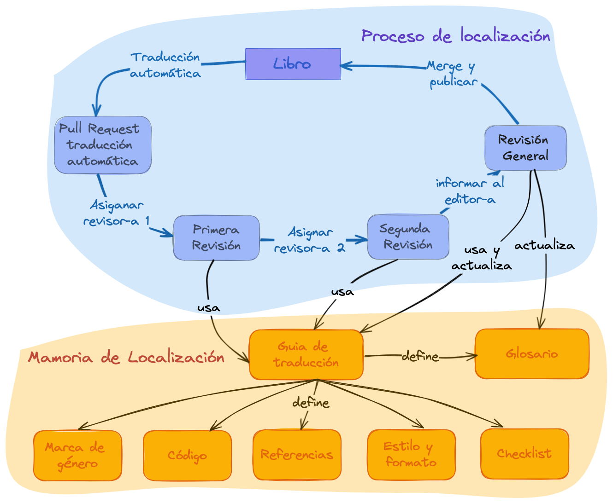
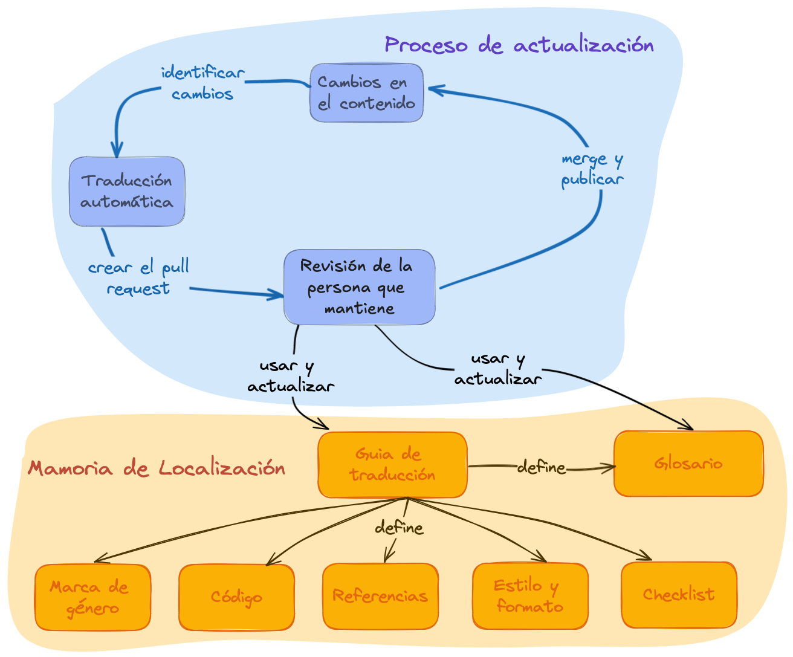

2 Visión general
“Encuentrate con las personas de tu comunidad donde están”.
2.1 Introducción
rOpenSci proporciona apoyo comunitario, normas e infraestructura para que las personas que hacen ciencia y desarrollan software de investigación con R desarrollen, mantengan y publiquen software científico de código abierto de alta calidad. Además, desarrollamos y mantenemos documentación de alta calidad y recursos para apoyar estas actividades. Muchos de nuestros materiales se definen como documentos vivos lo que significa que se mejoran y actualizan constantemente.
La publicación multilingüe de documentación y recursos implica dos aspectos, internacionalización y localización1:
La internacionalización se refiere a las soluciones tecnológicas que permite que el software se adapte a diferentes regiones sin requerir cambios de ingeniería en el código fuente. Es lo que nos permite localizar nuestros contenidos.
La localización es el proceso de tomar un contenido en su forma original y convertirlo en algo accesible y adecuado para otra región, país o público. Esto incluye el idioma, los formatos de fecha, la moneda, las unidades de medida y la compatibilidad con distintos juegos de caracteres.
Además, la localización de documentos vivos tiene dos etapas bien definidas en las que intervienen distintos recursos:
Fase 1. En primer lugar, traducir el material.
Fase 2. mantener el material actualizado y sincronizado entre los diferentes idiomas2.
La traducción suele ser el componente que más tiempo consume en estos esfuerzos3.
2.2 Infraestructura técnica y organización del trabajo
Existen muchas soluciones y herramientas para internacionalizar y localizar contenidos y software. Por ejemplo, sistemas de gestión de traducción (Crowdin, Transifex, Weblate), traductores automáticos (Google Translate, DeepL), sistemas de control de versiones (GitHub, GitLab), lenguajes de marcado (LaTeX, Markdown) y herramientas para escribir estos lenguajes (Overleaf, Quarto).
Estas soluciones tecnológicas están en continua evolución. La elección de la tecnología influye en las posibilidades que creamos para las contribuciones, por lo que hay que procurar elegir una tecnología que reduzca al máximo las barreras a la participación.4.
Desarrollamos nuestra infraestructura para nuestras localizaciones, utilizando las herramientas que mejor se adaptan a nuestro equipo, colaboradores y materiales y, por lo tanto, a nuestra comunidad.
Creamos el paquete babeldown para realizar una primera traducción automática de los documentos, incluyendo un proceso para actualizar traducciones existentes.
Creamos el paquete babelquarto para configurar y generar libros o sitios web multilingues con Quarto .
Utilizamos proyectos de GitHub para hacer un seguimiento del progreso de cada proyecto de localización y de las personas que tienen diferentes funciones de contribución, como revisores, editoras, y personas encargadas del mantenimiento.
También desarrollamos, y documentamos en estas directrices, un flujo de trabajo que sigue la misma idea de utilizar las herramientas que nuestra comunidad ya conoce y utiliza en sus actividades.
2.3 Como empezar con git y GitHub
Si recien estas iniciando a usar git y GitHub, te recomendamos iniciar con los siguientes recursos:
- Developing Software Together por Paola Corrales, Elio Campitelli y Yanina Bellini Saibene. Este taller fue desarrollado y enseñado para el programa de Campeonas/es de rOpenSci.
- Happy Git and GitHub for the useR. Este libro es una gran recurso para aprender a usar git y GitHub con R.
En la seccion de tranduccion y revision explicamos en detalle el flujo de trabajo que usamos en rOpenSci usando conceptos de git y GitHub con otras herramientas.
2.4 Aspectos generales de la fase 1 del proceso de traducción
El proceso de traducción comienza con una primera traducción automática utilizando DeepL via el paquete babeldown. Esto proporciona un primer borrador que luego es revisado por una persona, que corrigen los errores e incorporan los acuerdos de localización y traducción lingüística detallados en las Directrices específicas de cada idioma.
Para minimizar los errores y promover una visión amplia de la traducción, en rOpenSci pedimos que cada capítulo o sección pase al menos por dos revisiones hechas en serie (la primera revisa la traducción automática y la segunda revisa la primera revisión), seguidas de una revisión general del libro o documento en su conjunto. Se buscará, de ser posible, que las personas que revisen tengan origen en diferentes países, para poder considerar las diferentes formas en que se habla el idioma en todo el mundo.
El proceso de traducción y revisión se realiza en GitHub utilizando pull requests (consulta la sección de pull request para más detalles). Elegimos este flujo de trabajo porque es la infraestructura que utilizamos en nuestra comunidad. Todos nuestros paquetes y libros están alojados en GitHub y utilizan issues y pull requests en su desarrollo. Nuestro proceso de revision de software por pares tambien se realiza en GitHub utilizando las mismas herramientas. Además, esto permite que el proceso sea abierto para que otras personas puedan contribuir y aportar devoluciones.
Por supuesto, como en todas las áreas de rOpenSci, este proceso está sujeto a nuestro código de conducta para crear un entorno amigable y seguro.

2.5 Aspectos generales del proceso de traducción de la fase 2
En este caso estamos actualizando los cambios en el idioma original de un contenido que ya se ha traducido y tenemos que reflejar esos cambios en las diferentes traducciones.
El proceso es similar al de la etapa 1 de traducción, pero con algunas diferencias:
Tras el cambio de contenido en el idioma original, la persona que mantiene el proyecto de traducción crea una nueva traducción automática solamente de los cambios utilizando el paquete babeldown.
Luego revisa la pull request con la traducción automática y aplica los cambios necesarios.
Finalmente, hace un merge de la pull request con la traducción revisada.
La persona responsble actualiza las directrices de traducción específicas del idioma y el glosario si es necesario.
La entrada del blog de Maëlle Salmon Cómo actualizar una traducción con Babeldown explica este proceso con más detalle.

2.6 Referenciar y utilizar los materiales de localización
A continuación ofrecemos sugerencias para citar una traducción o hacer referencia a tu trabajo de traducción en un CV. Estos ejemplos se refieren específicamente a la traducción de “Paquetes de rOpenSci: Desarrollo, mantenimiento y revisión por pares”, pero puede aplicar estas recomendaciones a cualquier traducción.
2.6.1 Citar una traducción
El formato general es5:
{Autores/as de la version en el idioma original}.{(año de publicación)}. {Título traducido}. {[Título original en el idioma original]} (Traducción a {idioma}: {Autoras/es de la traducción}). {DOI}. (Trabajo original publicado en {año de publicación})
El texto Traducción a y Obra original publicada en deben estar escritos en la lengua de las traducciones.
Ejemplo utilizando la traducción al español del libro “Paquetes de rOpenSci: Desarrollo, mantenimiento y revisión por pares”:
rOpenSci, Anderson, B., Chamberlain, S., DeCicco, L., Gustavsen, J., Krystalli, A., Lepore, M., Mullen, L., Ram, K., Ross, N., Salmon, M., Vidoni, M., Riederer, E., Sparks, A., & Hollister, J. (2021). Paquetes rOpenSci: Desarrollo, mantenimiento y revisión por pares [rOpenSci Packages: Development, Maintenance, and Peer Review] (Traducción al español: {nombre de las personas que tradujeron}) Zenodo. https://doi.org/10.5281/zenodo.6619350 (Trabajo original publicado en 2021)
2.6.2 Menciona tu contribución en tu CV
En general, puedes utilizar algo parecido a este formato:
{Fecha de inicio} – {Fecha de finalización}. Localización colaborativa al {idioma} de “{nombre del material/libro}” (Edición general: {nombre completo}). Contribución como {role}. Detalles del proyecto: {Link al proyecto}.
Este es un ejemplo concreto de CV en inglés que hace referencia a un proyecto de traducción al español:
Mayo 2020 – Julio 2022. Localización colaborativa al español del libro “rOpenSci Packages: Development, Maintenance, and Peer Review” (Lead editor Yanina Bellini Saibene). Contribución como revisor. Detalles del proyecto: https://github.com/ropensci/dev_guide.
2.7 Referencias
Internacionalización y localización. Accedido el 1 de noviembre de 2022. https://en.wikipedia.org/wiki/Internationalization_and_localization↩︎
Yanina Bellini Saibene y Natalia Soledad Morandeira. Ciencia de Datos Multilingüe: Diez Consejos para Traducir Contenidos Científicos y Técnicos. Chapter at Our Environment.A collection of work by data designers, artists, and scientists. ISBN:979-8-218-20191-3.↩︎
Internacionalización y localización. Accedido el 1 de noviembre de 2022. https://en.wikipedia.org/wiki/Internationalization_and_localization↩︎
Yanina Bellini Saibene y Natalia Soledad Morandeira. Ciencia de Datos Multilingüe: Diez Consejos para Traducir Contenidos Científicos y Técnicos. Chapter at Our Environment.A collection of work by data designers, artists, and scientists. ISBN:979-8-218-20191-3.↩︎
Basamos esta recomendación en el artículo de recomendaciones de la APA, Sección Libro, reeditado en traducción. También recomendamos incluir el título en el idioma original, siguiendo este ejemplo de Piaget (1950).↩︎